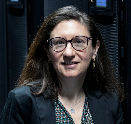

GO-Y is based in the Database (BD) group at CNRS LIRIS, Université Claude Bernard Lyon 1 — bringing together graph data management and causal inference under one roof.

Distinguished Professor of Computer Science · Université Claude Bernard Lyon 1 · Head of the Database (BD) Group, CNRS LIRIS · Member of Academia Europaea · Senior Member, Institut Universitaire de France · ACM Fellow
Angela Bonifati leads the Database group at CNRS LIRIS. Her research spans graph databases, knowledge graphs, data integration, data quality and query processing, and she co-authored foundational works on property graphs (PG-Schema, PG-Keys) and the GQL / SQL/PGQ graph query-language standards. A Member of Academia Europaea, she is Chair of the ACM SIGMOD Executive Committee, a VLDB Endowment Trustee, and General Chair of VLDB 2026.

Causality-aware graph data management, scalable graph analytics and graph-based retrieval. Ph.D. from CUHK-Shenzhen.
Homepage ↗
Explainability for graph neural networks and causality-driven graph databases — “why” and “what-if” questions over graph data.
Homepage ↗
Doctoral researcher on GO-Y, working on causal property graphs and causal graph querying.
Homepage soonThe GO-Y grant funds a growing team in Lyon. We welcome strong candidates in graph data management, databases, and causal inference. Informal enquiries are encouraged.
Lay the foundations of causal graph databases: a formal causal property graph model, causal query operators, and the integration, consistency & versioning of causal property graphs.
Align causal inference (causal DAGs / structural causal models) with property graphs to validate, store, integrate, version and query causal graphs over time.
Please write to the PI with a CV and a short statement of interest.